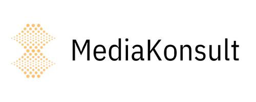
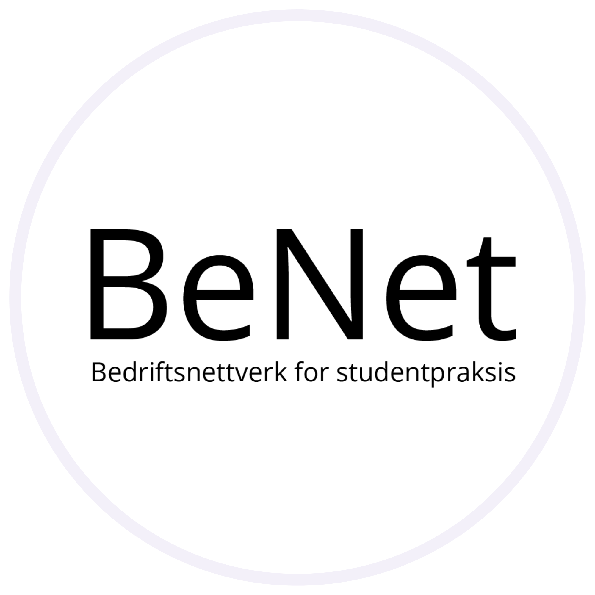
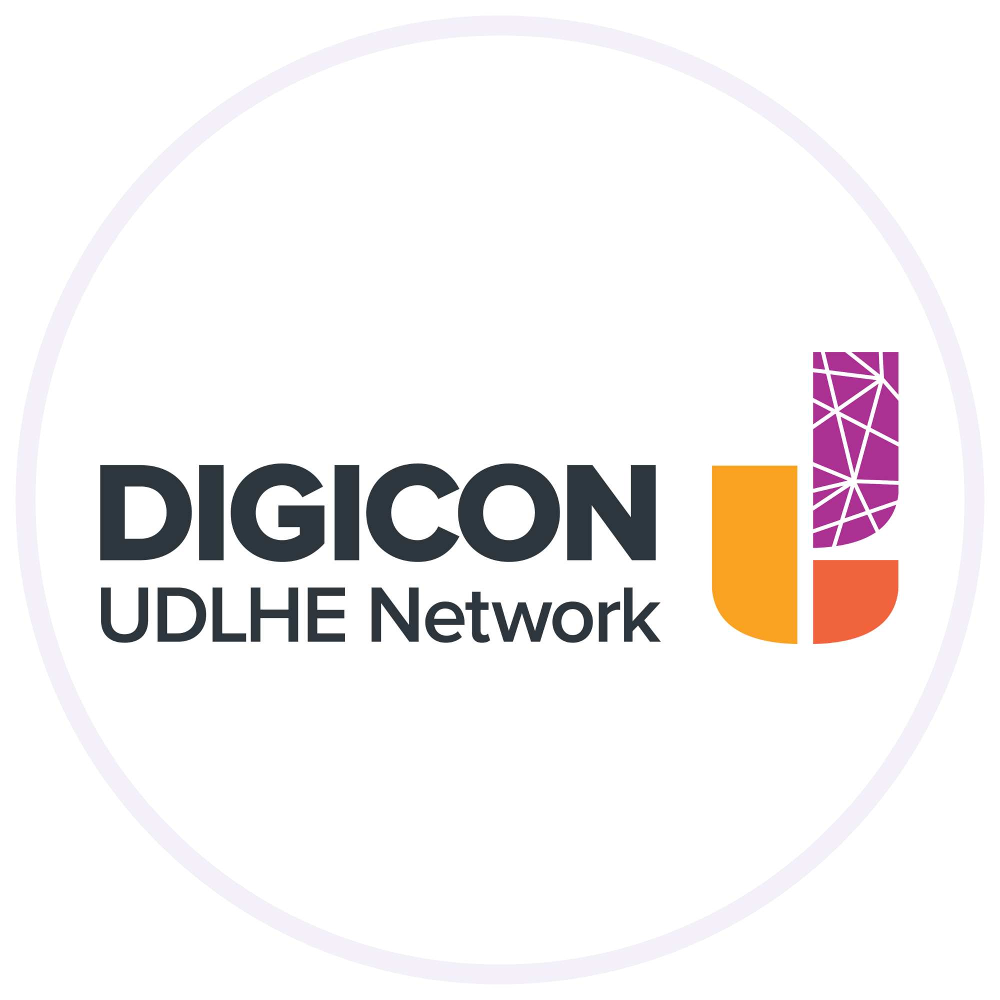

Portfolio
Projects
A showcase of selected projects and design work
Founder

Mediakonsult
Web agency work — website design, structure, and usability for real clients using WordPress and Elementor.
View project →
Research Assistant

BeNet
A business network platform connecting students and companies for internships.
View project →

rurAllure
UX research and app design for sustainable pilgrimage tourism in rural Europe.
View project →

Figma Lecture
Developed and delivered Figma guest lectures to design and web coding students at NTNU.
View project →

Digicon 2022
Presented workshop and makerspace research at the Digicon 2022 conference.
View project →
Bachelor

Walter & Vera
Interactive news app for children aged 7–12, developed with local newspaper OA.
View project →

REKO-Ringen
Information architecture and UX redesign for a local food distribution network.
View project →

ABBP Booking
Booking platform for artists, bands, companies and private individuals — prototyped in Adobe XD.
View project →
Consultant

Made 4for Me
Social shopping app redesign for a start-up targeting 15–25 year olds.
View project →

Tiny Workers
Brand identity and digital design for a small business.
View project →